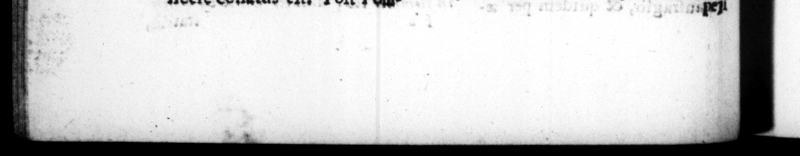

2 Eee us 7 007 — — — — r ia RFI 2a UTC ORR IRS m9 4 ws % * * Y = - —— — » Hagitante populo, ab — amiſerat ; modo pace os commeatus, famemna vibus ex inte fabticatis, nc un — millibus manumiſſis, & ad rem um datis, porrum Julium apud Bajas immiſſo in Lucrinum & Avernum lacum mari, effecir, In quo cum hieme tota copias erercuiſſet. Pompejum inter Mylas & Naulochum ſuperavit: fab horam pugnæ tam arcto repente ſomno devinctus ut ad danduni ſignum ab amicisexcitaretur, Unde præbitam Antonio matertam puren exprobrandi, M rectis quidem oculis eum adſpicere potuiſſe inſtructam aciem e werum ſupinum, celum intuen tem, ſtupidum cubuiſſe : nec prius ſurrexiſſe, ac miltibus in co m fuiſſe, a + M. Agrippa ate ſont um j Alc dictum fattumqz ' ejus criminantur, qua ſi claſlibus rempeſtate perdicis exclamaverit etiam invito Nept uno victoriam ſe ad- turum ac die Circenſum proximo ſollenni pompæ ſmulacrum Dei detraxerit. Nec ten ere plura ac majora pericula ullo alio bello adiit. Trajecto in, Siciliam exercitu, cum ad partem reliquam copiatum cont mentem repeteret, oppreſſus ex improviſo a Demochare & Apollophane, præſect is Pompeji, uno demum navigio æ,gerrine effugit. Item cum \ wer Locios Rhegium pediHus iret, & profpectis biremibus Pompejanis texram legen- tibus, ſuas ratus, deſcendiſFer ad littus, pzne exceptus eſt, Tunc etiam per devics tramites refugientem, ſervus Kmilii Pauli, comitis e jus, dolens proſcriptum ol im ab eo paizem Paulum, & quafi occu ſone ultionis oblata, interſiceie conatus eit. Poſi Po© cc S$UET/VRANQ, mine, occafoned by Pompey's mnrereapy que ingraveſcentem : donec ing be . wards in the following words. ti me $00, at he was making of im 2 tempiea te li, bun, ft nt b 4. bet forced to. it, h d of the people, bets 2 the:r provifions, fe!ched from” . regn pK 2 2197 9 new fleet, and twenty thou} five: being manumſed, ard given him ths bar, he made the Julian 1 4 Baie, by letting the fea inte the Lucrine and Avernian laks. after he had exere:;[ed bis fee winter, be defeated Pumpen berwint Myles and Nawlochu:, ben tenl eized, dre the battle N _ 72 1 25 , that his 2 were obliged to wak: him to give th Signal. Which gave occafron 506 As 4 - S ſuppoſe, fo wpbrard him —_ he was not able ro look up upon the fleet, when drawn up ready tle, but lay ſtupid upon his back, gazing at che heavens, and did nt riſe, or come in fight of his till the enemy's ſhips were 0 to ſheer oft by M. Agrippa · 0 charge bim w.th a ſayins, and mn #Fion upon it, wholly indef:nſible ;_# that he cried out, upon the boſs \ 6... fleets by ſterm, that he would Have the victory in ſpire of NEPTUNE : and that at the next Circenſsan gam, he would not ſuffer the flatue of that God to be carryed in proceſſion, 21 uſual upon that eecaſiy. Indied te arte eter run more or greater riſques ia any his wars than this, Aroing 'fh'pt part of Lis army into Siciy, aud n. turning for the , he was by Pon p-y's admirals Deruchares and Apoll-phanes, and got off with, mitth ace, ard with a ſingle ſp . Likewif. as he was travelling en — | 7 —.— "ſing eres of Pomipey's, þ ; cooft, ſuppoſing them to * wet den to the ſhove, ond to have been ſnappes. At # ſome _ out of the way pa h a ſlave ifl is Paulus that attend bim, wi mg Ng the proſcrip.ion of bu father; an Re —— r haugbt, 4 fire epprenuniey #9. revenge: it, hn. f - bra by. =
